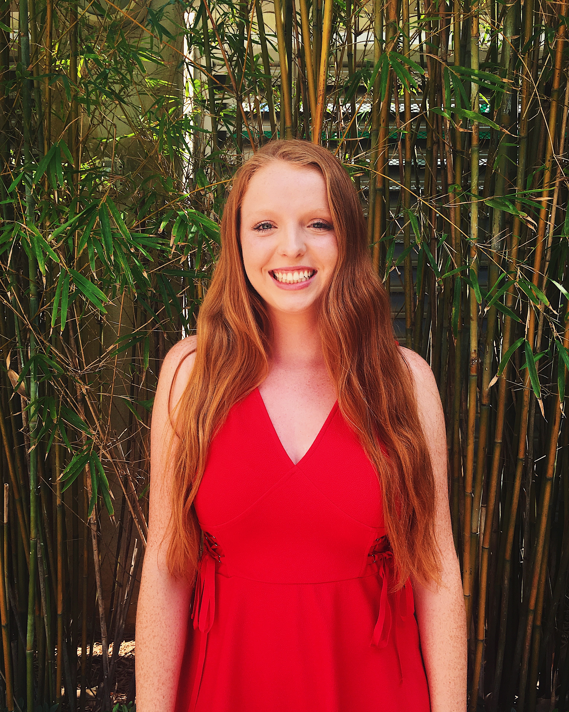

Joey Haas
1353 West Blue Hill Ave.
Coral Gables, FL 33146
Contact Information
jhh26@miami.edu
(303)437-6580
About Me
I am currently a senior at the University of Miami studying Electronic Media and Music Business. Along with my passion for journalism, I love to use design to complment the editorial aspects of media in order to create work that draws the reader into the page. I love challenging myself by trying new things. My eagerness to learn and strong work ethic is infectious in a team setting.
Work Experience
Herbert Wellness Center: Marketing Assistant
- Designing marketing materials like flyers and brochures, organizing and planning social media posts, and brainstorming promotional events
Healing Waters International: Graphic Design Intern
- Designing printed as well as online collateral such as brand guidelines, brochures, posters, thank you notes, infographics, etc.
Eight Thousand Miles: Remote Design Intern
- Designing logo options for the company’s new brand; and discussing and planning the desired style for the company’s aesthetic in terms of social media and website
University of Miami IT: User Assistant
- Keeping the computer lab organized by filling printers with paper and fixing equipment when needed; and assisting students with any questions they might have about the computers or printers
Kumon: Afterschool Math and Reading Tutoring
- Helping kids aged 3-15 work through Kumon assignments, and working on logistical preparations for tutoring sessions
Skills
- Time Management
- Creative
- Organized
- Communication
- Team Player
Interests
- EDM Music
- Dancing
- Graphic Design
- Scuba Diving
- Traveling
- Trying new food
References
| Name |
Email |
| Robert Treadwell |
rtt23@miami.edu |
| Kayla Huff |
khuff@healingwaters.org |
| Logan Borgmann |
logan.borgmann@argusmanagers.com |